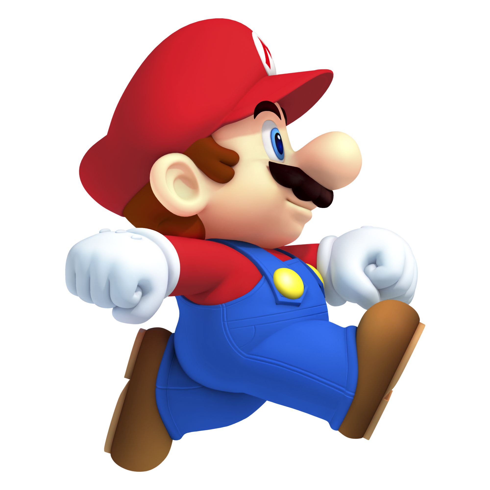
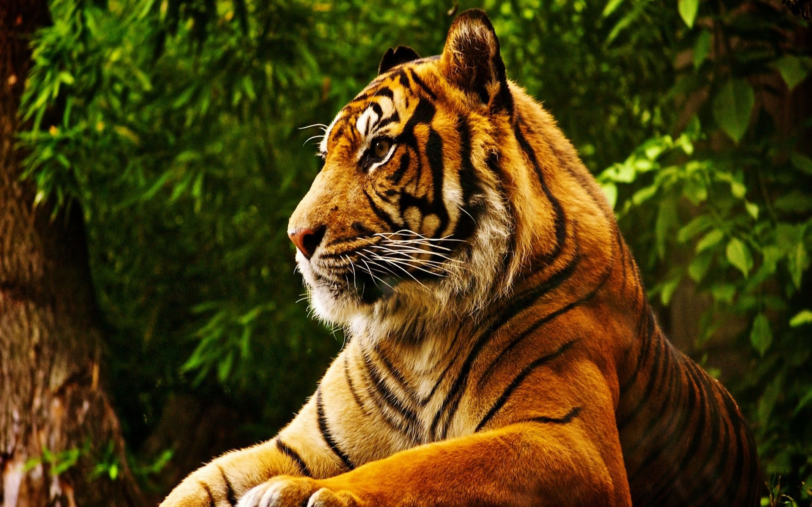

День четырнадцатый. Новый формат
Вчера я узнал, какой формат изображения подходит для аватарки, и добавил её в свой блог. Мне понравилось. Красиво же. Решил сделать шпаргалку, чтобы не забыть, какие ещё форматы изображений существуют и для чего используются.
Моя первая гифка:

Вот картинка в формате PNG:
Вот картинка в формате JPEG:
